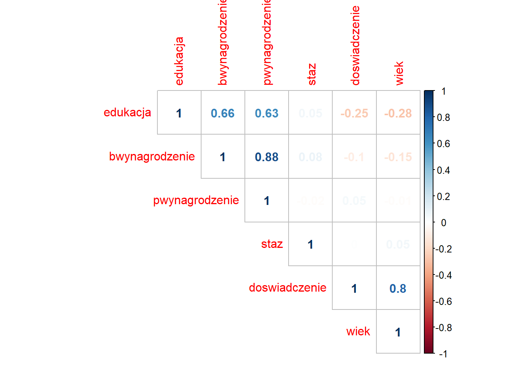

3 Regresja
3.1 Wprowadzenie
Metody regresji pozwalają na analizowanie zależności przyczynowo-skutkowych oraz predycję nieznanych wartości. Korzystając z tej metody należy jednak pamiętać, że model regresji jest tylko przybliżeniem rzeczywistości.
Przykłady zastosowania regresji:
zależność wielkości sprzedaży od wydatków na reklamę
zależność wynagrodzenia od lat doświadczenia
Na początku pracy wczytujemy biblioteki tidyverse i readxl.
3.2 Regresja prosta
Na podstawie danych dotyczących informacji o doświadczeniu i wynagrodzeniu pracowników zbuduj model określający ‘widełki’ dla potencjalnych pracowników o doświadczeniu równym 8, 10 i 11 lat.
Wczytujemy dane i sprawdzamy czy nie występują zera bądź braki danych z użyciem funkcji summary().
## YearsExperience Salary
## Min. : 1.100 Min. : 37731
## 1st Qu.: 3.200 1st Qu.: 56721
## Median : 4.700 Median : 65237
## Mean : 5.313 Mean : 76003
## 3rd Qu.: 7.700 3rd Qu.:100545
## Max. :10.500 Max. :122391Następnie stworzymy wykres.

Najprostszym sposobem wizualizacji jest wykorzystanie funkcji plot(), niemniej taki wykres nie jest najpiękniejszy i trudno się go formatuje. Dużo lepiej skorzystać z pakietu ggplot2.
ggplot(salary, aes(x=YearsExperience, y=Salary)) +
geom_point() +
geom_smooth(method = "lm", se = FALSE) +
xlab("Doświadczenie") +
ylab("Pensja") +
xlim(0,12) +
ylim(35000, 126000) +
theme_bw()
W argumentach funkcji ggplot() podajemy co wizualizujemy, natomiast sposób prezentacji ustalany jest przez funkcje geom. Funkcje xlab() i ylab() określają etykiety osi, a xlim() i ylim() wartości graniczne. Funkcje rozpoczynające się od theme_ określają wygląd wykresu.
Modelowanie rozpoczynamy od określenia zmiennej zależnej i niezależnej.
- zmienna zależna/objaśniana: pensja - \(y\)
- zmienna niezależna/objaśniająca: doświadczenie - \(x\)
Szukamy teraz wzoru na prostą opisującą badane cechy.
Ogólna postać regresji prostej jest następująca:
\[\hat{y}_{i}=b_{1}x_{i}+b_{0}\]
gdzie \(\hat{y}\) oznacza wartość teoretyczną, leżącą na wyznaczonej prostej, \(x_i\) wartość zmiennej niezależnej, a \(b_1\) i \(b_0\) to współczynniki modelu.
Wobec tego wartości empiryczne \(y\) będą opisane formułą:
\[y_{i}=b_{1}x_{i}+b_{0}+u_{i}\]
w której \(u_i\) oznacza składnik resztowy wyliczany jako \(u_{i}=y_{i}-\hat{y}_{i}\).
Współczynnik kierunkowy \(b_1\) informuje o ile przeciętne zmieni się wartość zmiennej objaśnianej \(y\), gdy wartość zmiennej objaśniającej \(x\) wzrośnie o jednostkę.
Wyraz wolny \(b_0\) to wartość zmiennej objaśnianej \(y\), w sytuacji w której wartość zmiennej objaśniającej \(x\) będzie równa 0. Często interpretacja tego parametru nie ma sensu.
Następnie w R korzystamy z funkcji lm, w której należy określić zależność funkcyjną w formie: zmienna_zalezna ~ zmienna niezalezna.
##
## Call:
## lm(formula = Salary ~ YearsExperience, data = salary)
##
## Residuals:
## Min 1Q Median 3Q Max
## -7958.0 -4088.5 -459.9 3372.6 11448.0
##
## Coefficients:
## Estimate Std. Error t value Pr(>|t|)
## (Intercept) 25792.2 2273.1 11.35 5.51e-12 ***
## YearsExperience 9450.0 378.8 24.95 < 2e-16 ***
## ---
## Signif. codes: 0 '***' 0.001 '**' 0.01 '*' 0.05 '.' 0.1 ' ' 1
##
## Residual standard error: 5788 on 28 degrees of freedom
## Multiple R-squared: 0.957, Adjusted R-squared: 0.9554
## F-statistic: 622.5 on 1 and 28 DF, p-value: < 2.2e-16Na podstawie otrzymanego wyniku dokonujemy interpretacji parametrów.
- b1 = 9450 - wzrost doświadczenia o rok powoduje przeciętny wzrost pensji o 9450 $
- b0 = 25792,2 - pracownik o doświadczeniu 0 lat uzyska pensję w wysokości 25792,2 $
Trzy gwiazki przy współczynniku \(b_1\) oznaczają, że doświadczenie ma istotny wpływ na wartości pensji. Wyraz wolny także jest istotny, natomiast ogólnie nie jest wymagana jesgo istotność.
Oprócz interpretacji współczynników ważne są jeszcze inne miary jakości modelu.
Odchylenie standardowe składnika resztowego jest pierwiastkiem z sumy kwadratów reszt podzielonej przez liczbę obserwacji pomniejszoną o 2:
\[S_{u}=\sqrt{\frac{\sum\limits_{i=1}^{n}{(y_{i}-\hat{y}_{i})^2}}{n-2}}\]
Błąd resztowy (odchylenie standardowe składnika resztowego) \(S_u\) wynosi 5788$, co oznacza, że wartości obliczone na podstawie modelu różnią się od rzeczywistości średnio o +/- 5788 $
Współczynnik determinacji określa, jaki procent wariancji zmiennej objaśnianej został wyjaśniony przez funkcję regresji. \(R^2\) przyjmuje wartości z przedziału \(<0;1>\) ( \(<0\%;100\%>\) ), przy czym model regresji tym lepiej opisuje zachowanie się badanej zmiennej objaśnianej, im \(R^2\) jest bliższy jedności (bliższy 100%)
\[R^2=1-\frac{\sum\limits_{i=1}^{n}{(y_{i}-\hat{y}_{i})^2}}{\sum\limits_{i=1}^{n}{(y_{i}-\bar{y}_{i})^2}}\]
Współczynnik \(R^2\) (multiple R-squared) wynosi 0,957 czyli doświadczenie wyjaśnia 95,7% zmienności pensji
Na podstawie tego modelu dokonamy wyznaczenia wartości teoretycznych dla kilku wybranych wartości doświadczenia. Nowe wartości muszą być w postaci zbioru danych, zatem tworzymy nową ramkę danych.
## 1 2 3
## 101391.9 120291.8 129741.8Tym sposobem uzyskujemy następujące widełki:
- pracownik o 8 latach doświadczenia - proponowana pensja 101391,9 $ +/- 5788 $
- pracownik o 10 latach doświadczenia - proponowana pensja 120291,8 $ +/- 5788 $
- pracownik o 11 latach doświadczenia - proponowana pensja 129741,8 $ +/- 5788 $
W powyższym przykładzie prognozowane wartości pojawiły się w konsoli, natomiast w sytuacji, w której chcielibyśmy wykonać predykcję dla bardzo wielu nowych wartości to warto te prognozowane wartości umieścić od razu w zbiorze danych. Można to zrobić w następujący sposób:
nowiPracownicy <- nowiPracownicy %>%
mutate(salary_pred=predict(object = salary_model, newdata = .))
nowiPracownicy## YearsExperience salary_pred
## 1 8 101391.9
## 2 10 120291.8
## 3 11 129741.8W powyższym kodzie symbol . oznacza analizowany zbiór danych, zatem nie ma potrzeby powtarzania jego nazwy.
3.2.1 Zadanie
Dla danych dotyczących sklepu nr 77 opracuj model zależności sprzedaży od liczby klientów. Ile wynosi teoretyczna sprzedaż w dniach, w których liczba klientów będzie wynosiła 560, 740, 811 oraz 999 osób?
3.3 Regresja wieloraka
Ogólna postać regresji wielorakiej jest następująca:
\[\hat{y}_{i}=b_{1}x_{1i}+b_{2}x_{2i}+...+b_{k}x_{ki}+b_{0}\]
W tym przypadku nie wyznaczamy prostej tylko \(k\)-wymiarową przestrzeń.
Na podstawie danych dotyczących zatrudnienia opracuj model, w którym zmienną zależną jest bieżące wynagrodzenie. Za pomocą regresji określimy jakie cechy mają istotny wpływ na to wynagrodzenie.
Opis zbioru:
- id - kod pracownika
- plec - płeć pracownika (0 - mężczyzna, 1 - kobieta)
- data_urodz - data urodzenia
- edukacja - wykształcenie (w latach nauki)
- kat_pracownika - grupa pracownicza (1 - specjalista, 2 - menedżer, 3 - konsultant)
- bwynagrodzenie - bieżące wynagrodzenie
- pwynagrodzenie - początkowe wynagrodzenie
- staz - staż pracy (w miesiącach)
- doswiadczenie - poprzednie zatrudnienie (w miesiącach)
- zwiazki - przynależność do związków zawodowych (0 - nie, 1 - tak)
- wiek - wiek (w latach)
Rozpoczynamy od wczytania danych,
pracownicy <- read_xlsx("data/pracownicy.xlsx")
pracownicy2 <- pracownicy %>%
filter(!is.na(wiek)) %>%
select(-id, -data_urodz) %>%
mutate(plec=as.factor(plec),
kat_pracownika=as.factor(kat_pracownika),
zwiazki=as.factor(zwiazki))
summary(pracownicy2)## plec edukacja kat_pracownika bwynagrodzenie pwynagrodzenie
## 0:257 Min. : 8.00 1:362 Min. : 15750 Min. : 9000
## 1:216 1st Qu.:12.00 2: 27 1st Qu.: 24000 1st Qu.:12450
## Median :12.00 3: 84 Median : 28800 Median :15000
## Mean :13.49 Mean : 34418 Mean :17009
## 3rd Qu.:15.00 3rd Qu.: 37050 3rd Qu.:17490
## Max. :21.00 Max. :135000 Max. :79980
## staz doswiadczenie zwiazki wiek
## Min. :63.00 Min. : 0.00 0:369 Min. :24.00
## 1st Qu.:72.00 1st Qu.: 19.00 1:104 1st Qu.:30.00
## Median :81.00 Median : 55.00 Median :33.00
## Mean :81.14 Mean : 95.95 Mean :38.67
## 3rd Qu.:90.00 3rd Qu.:139.00 3rd Qu.:47.00
## Max. :98.00 Max. :476.00 Max. :66.00W zmiennej wiek występował brak danych, który został usunięty. Usunięto także kolumny, które nie przydadzą się w modelowaniu. Ponadto dokonujemy przekształcenia typu cech, które są jakościowe (płeć, kat_pracownika, zwiazki) z typu liczbowego na czynnik/faktor. Taka modyfikacja powoduje, że ta cecha będzie przez model traktowana jako zmienna dychotomiczna (zerojedynkowa). Proces trasformacji takiej cechy jest pokazany poniżej.
Oryginalny zbiór
| id | stanowisko |
|---|---|
| 1 | specjalista |
| 2 | menedżer |
| 3 | specjalista |
| 4 | konsultant |
| 5 | konsultant |
Zmienna zerojedynkowa
| id | menedżer | konsultant |
|---|---|---|
| 1 | 0 | 0 |
| 2 | 1 | 0 |
| 3 | 0 | 0 |
| 4 | 0 | 1 |
| 5 | 0 | 1 |
W modelu zmienna zależna to bwynagrodzenie, natomiast jako zmienne niezależne bierzemy pod uwagę wszystkie pozostałe cechy. W celu uniknięcia notacji naukowej w uzyskiwanych wynikach dodajemy opcję options(scipen = 5).
##
## Call:
## lm(formula = bwynagrodzenie ~ ., data = pracownicy2)
##
## Residuals:
## Min 1Q Median 3Q Max
## -23185 -3041 -705 2591 46295
##
## Coefficients:
## Estimate Std. Error t value Pr(>|t|)
## (Intercept) -4764.87418 3590.49652 -1.327 0.18514
## plec1 -1702.43743 796.51779 -2.137 0.03309 *
## edukacja 482.43603 160.83977 2.999 0.00285 **
## kat_pracownika2 6643.17910 1638.06138 4.056 5.87e-05 ***
## kat_pracownika3 11169.64519 1372.73990 8.137 3.77e-15 ***
## pwynagrodzenie 1.34021 0.07317 18.315 < 2e-16 ***
## staz 154.50876 31.65933 4.880 1.46e-06 ***
## doswiadczenie -15.77375 5.78369 -2.727 0.00663 **
## zwiazki1 -1011.55276 787.80884 -1.284 0.19978
## wiek -64.78787 47.88015 -1.353 0.17668
## ---
## Signif. codes: 0 '***' 0.001 '**' 0.01 '*' 0.05 '.' 0.1 ' ' 1
##
## Residual standard error: 6809 on 463 degrees of freedom
## Multiple R-squared: 0.8444, Adjusted R-squared: 0.8414
## F-statistic: 279.1 on 9 and 463 DF, p-value: < 2.2e-16Tak zbudowany model wyjaśnia 84,4% zmienności bieżącego wynagrodzenia, ale nie wszystkie zmienne są w tym modelu istotne.
Parametry regresji mają następujące interpretacje:
- plec1 - kobiety zarabiają przeciętnie o 1702,44 zł mniej niż mężczyźni,
- edukacja - wzrost liczby lat nauki o rok powoduje średni wzrost bieżącego wynagrodzenia o 482,44 zł
- kat_pracownika2 - pracownicy o kodzie 2 (menedżer) zarabiają średnio o 6643,18 zł więcej niż pracownik o kodzie 1 (specjalista)
- kat_pracownika2 - pracownicy o kodzie 3 (konsultant) zarabiają średnio o 11169,65 zł więcej niż pracownik o kodzie 1 (specjalista)
- pwynagrodzenie - wzrost początkowego wynagrodzenia o 1 zł powoduje przeciętny wzrost bieżącego wynagrodzenia o 1,34 zł
- staz - wzrost stażu pracy o miesiąc skutkuje przeciętnym wzrostem bieżącego wynagrodzenia o 154,51 zł
- doswiadcznie - wzrost doświadczenia o miesiąc powoduje średni spadek bieżącego wynagrodzenia o 15,77 zł
- zwiazki1 - pracownicy należący do związków zawodowych zarabiają średnio o 1011,55 zł mniej aniżeli pracownicy, którzy do związków nie zależą
- wiek - wzrost wieku pracownika o 1 rok to przeciętnym spadek bieżącego wynagrodzenia o 64,79 zł
Wszystkie te interpretacje obowiązują przy założeniu ceteris paribus - przy pozostałych warunkach niezmienionych.
Ten model wymaga oczywiście ulepszenia do czego wykorzystamy pakiet olsrr.
Pierwszą kwestią, którą się zajmiemy jest współliniowość zmiennych. W regresji zmienne objaśniające powinny być jak najbardziej skorelowane ze zmienną objaśnianą, a możliwie nieskorelowane ze sobą. W związku z tym wybieramy ze zbioru wyłącznie cechy ilościowe, dla którym wyznaczymy współczynnik korelacji liniowej Pearsona. Do wizualizacji tych wartości wykorzystamy pakiet corrplot służący do wizualizacji współczynnika korelacji.
library(corrplot)
library(olsrr)
korelacje <- pracownicy2 %>%
select(-c(plec, kat_pracownika, zwiazki)) %>%
cor()
corrplot(korelacje, method = "number", type = "upper")
Możemy zauważyć, że wartości bieżącego wynagrodzenia są najsilniej skorelowane w wartościami wynagrodzenia początkowego. Także doświadczenie i wiek są silnie ze sobą związane, co może sugerować, że obie zmienne wnoszą do modelu podobną informację.
W związku z tym powinniśmy wyeliminować niektóre zmienne z modelu pozostawiając te najważniejsze. Wyróżnia się trzy podejścia do tego zagadnienia:
- ekspercki dobór cech,
- budowa wszystkich możliwych modeli i wybór najlepszego według określonego kryterium,
- regresja krokowa.
W przypadku budowy wszystkich możliwych modeli należy pamiętać o rosnącej wykładniczo liczbie modeli: \(2^p-1\), gdzie \(p\) oznacza liczbę zmiennych objaśniających. w rozważanym przypadku liczba modeli wynosi 255.
W uzyskanym zbiorze danych są informacje o numerze modelu, liczbie użytych zmiennych, nazwie tych zmiennych oraz wiele miar jakości. Te, które warto wziąć pod uwagę to przede wszystkim:
rsquare- współczynnik R-kwadrat,aic- kryterium informacyjne Akaike,msep- błąd średniokwadratowy predykcji.
Najwyższa wartość współczynnika \(R^2\) związana jest z modelem zawierającym wszystkie dostępne zmienne objaśniające. Jest to pewna niedoskonałość tej miary, która rośnie wraz z liczbą zmiennych w modelu, nawet jeśli te zmienne nie są istotne.
W przypadku kryteriów informacyjnych oraz błędu średniokwadratowego interesują nas jak najmniejsze wartości. Wówczas jako najlepszy należy wskazać model nr 219 zawierający 6 zmiennych objaśniających.
Metodą, która także pozwoli uzyskać optymalny model, ale przy mniejszym obciążeniu obliczeniowym jest regresja krokowa polegająca na krokowym budowaniu modelu.
##
##
## Stepwise Summary
## -----------------------------------------------------------------------------------------------------
## Variable Method AIC RSS Sum Sq R-Sq Adj. R-Sq
## -----------------------------------------------------------------------------------------------------
## pwynagrodzenie addition 9862.260 31053506813.535 106862706669.340 0.77484 0.77436
## kat_pracownika addition 9786.152 26215474648.689 111700738834.186 0.80992 0.80870
## doswiadczenie addition 9743.487 23853248017.651 114062965465.224 0.82705 0.82557
## staz addition 9719.469 22576592070.620 115339621412.255 0.83630 0.83455
## edukacja addition 9707.338 21912088629.084 116004124853.791 0.84112 0.83907
## plec addition 9703.188 21629051655.016 116287161827.859 0.84317 0.84081
## -----------------------------------------------------------------------------------------------------Otrzymany w ten sposób model jest tożsamy z modelem charakteryzującym się najlepszymi miarami jakości spośród zbioru wszystkich możliwych modeli:
wybrany_model <- lm(bwynagrodzenie ~ pwynagrodzenie + kat_pracownika + doswiadczenie + staz + plec + edukacja, data = pracownicy2)
summary(wybrany_model)##
## Call:
## lm(formula = bwynagrodzenie ~ pwynagrodzenie + kat_pracownika +
## doswiadczenie + staz + plec + edukacja, data = pracownicy2)
##
## Residuals:
## Min 1Q Median 3Q Max
## -22922 -3300 -673 2537 46524
##
## Coefficients:
## Estimate Std. Error t value Pr(>|t|)
## (Intercept) -6547.147 3402.860 -1.924 0.05496 .
## pwynagrodzenie 1.342 0.073 18.382 < 2e-16 ***
## kat_pracownika2 6734.992 1631.122 4.129 4.32e-05 ***
## kat_pracownika3 11226.635 1368.413 8.204 2.30e-15 ***
## doswiadczenie -22.302 3.571 -6.246 9.51e-10 ***
## staz 147.865 31.461 4.700 3.43e-06 ***
## plec1 -1878.949 761.703 -2.467 0.01399 *
## edukacja 501.391 160.270 3.128 0.00187 **
## ---
## Signif. codes: 0 '***' 0.001 '**' 0.01 '*' 0.05 '.' 0.1 ' ' 1
##
## Residual standard error: 6820 on 465 degrees of freedom
## Multiple R-squared: 0.8432, Adjusted R-squared: 0.8408
## F-statistic: 357.1 on 7 and 465 DF, p-value: < 2.2e-16Uzyskany model charakteryzuje się nieznacznie większym błędem resztowym od modelu ze wszystkimi zmiennymi, ale wszystkie zmienne są istotne. Wyraz wolny (Intercept) nie musi być istotny w modelu.
Wróćmy jeszcze na chwilę do tematu współliniowości zmiennych objaśniających:
## Variables Tolerance VIF
## 1 pwynagrodzenie 0.2979792 3.355939
## 2 kat_pracownika2 0.6867111 1.456217
## 3 kat_pracownika3 0.3595692 2.781106
## 4 doswiadczenie 0.7054176 1.417600
## 5 staz 0.9862198 1.013973
## 6 plec1 0.6831049 1.463904
## 7 edukacja 0.4607529 2.170361Współczynnik tolerancji wskazuje na procent niewyjaśnionej zmienności danej zmiennej przez pozostałe zmienne objaśniające. Przykładowo współczynnik tolerancji dla początkowego wynagrodzenia wynosi 0,2980, co oznacza, że 30% zmienności początkowego wynagrodzenia nie jest wyjaśnione przez pozostałe zmienne w modelu. Z kolei współczynnik VIF jest obliczany na podstawie wartości współczynnika tolerancji i wskazuje o ile wariancja szacowanego współczynnika regresji jest podwyższona z powodu współliniowości danej zmiennej objaśniającej z pozostałymi zmiennymi objaśniającymi. Wartość współczynnika VIF powyżej 4 należy uznać za wskazującą na współliniowość. W analizowanym przypadku takie zmienne nie występują.
Ocena siły wpływu poszczególnych zmiennych objaśniających na zmienną objaśnianą w oryginalnej postaci modelu nie jest możliwa. Należy wyznaczyć standaryzowane współczynniki beta, które wyliczane są na danych standaryzowanych, czyli takich, które są pozbawione jednostek i cechują się średnią równą 0, a odchyleniem standardowym równym 1. Standaryzacja ma sens tylko dla cech numerycznych, w związku z czym korzystamy z funkcji mutate_if(), która jako pierwszy argument przyjmuje warunek, który ma być spełniony, aby była zastosowane przekształcenie podawane jako drugi argument.
pracownicy2_std <- pracownicy2 %>%
mutate_if(is.numeric, scale)
wybrany_model_std <- lm(bwynagrodzenie ~ pwynagrodzenie + kat_pracownika +
doswiadczenie + staz + plec + edukacja, data = pracownicy2_std)
summary(wybrany_model_std)##
## Call:
## lm(formula = bwynagrodzenie ~ pwynagrodzenie + kat_pracownika +
## doswiadczenie + staz + plec + edukacja, data = pracownicy2_std)
##
## Residuals:
## Min 1Q Median 3Q Max
## -1.34098 -0.19306 -0.03939 0.14841 2.72171
##
## Coefficients:
## Estimate Std. Error t value Pr(>|t|)
## (Intercept) -0.08893 0.03144 -2.828 0.00488 **
## pwynagrodzenie 0.61842 0.03364 18.382 < 2e-16 ***
## kat_pracownika2 0.39400 0.09542 4.129 4.32e-05 ***
## kat_pracownika3 0.65677 0.08005 8.204 2.30e-15 ***
## doswiadczenie -0.13657 0.02187 -6.246 9.51e-10 ***
## staz 0.08691 0.01849 4.700 3.43e-06 ***
## plec1 -0.10992 0.04456 -2.467 0.01399 *
## edukacja 0.08464 0.02706 3.128 0.00187 **
## ---
## Signif. codes: 0 '***' 0.001 '**' 0.01 '*' 0.05 '.' 0.1 ' ' 1
##
## Residual standard error: 0.399 on 465 degrees of freedom
## Multiple R-squared: 0.8432, Adjusted R-squared: 0.8408
## F-statistic: 357.1 on 7 and 465 DF, p-value: < 2.2e-16Spośród cech ilościowych największy wpływ na zmienną objaśnianą mają wartości wynagrodzenia początkowego, staż, edukacja i na końcu doświadczenie.
Reszty czyli różnice pomiędzy obserwowanymi wartościami zmiennej objaśnianej, a wartościami wynikającymi z modelu w klasycznej metodzie najmniejszych kwadratów powinny być zbliżone do rozkładu normalnego. Oznacza to, że najwięcej reszt powinno skupiać się wokół zerowych różnic, natomiast jak najmniej powinno być wartości modelowych znacznie różniących się od tych rzeczywistych.

Reszty w naszym modelu wydają się być zbliżone do rozkładu normalnego. Jednoznaczną odpowiedź da jednak odpowiedni test.
## -----------------------------------------------
## Test Statistic pvalue
## -----------------------------------------------
## Shapiro-Wilk 0.868 0.0000
## Kolmogorov-Smirnov 0.1092 0.0000
## Cramer-von Mises 42.5504 0.0000
## Anderson-Darling 13.0233 0.0000
## -----------------------------------------------Hipoteza zerowa w tych testach mówi o zgodności rozkładu reszt z rozkładem normalnym. Na podstawie wartości p, które są mniejsze od \(\alpha=0,05\) stwierdzamy, że są podstawy do odrzucenia tej hipotezy czyli reszty z naszego modelu nie mają rozkładu normalnego. W diagnostyce przyczyn takiego stanu rzeczy pomoże nam wykres kwantyl-kwantyl:

Gdyby wszystkie punkty leżały na prostej to oznaczałoby to normalność rozkładu reszt. Tymczasem po lewej i prawej stronie tego wykresu znajdują się potencjalne wartości odstające, które znacznie wpływają na rozkład reszt modelu.
Wartości odstające można ustalić na podstawie wielu kryteriów. Do jednych z najbardziej popularnych należy odległość Cooka:
Przypisanie tej funkcji do obiektu zwraca nam tabelę z numerami zidentyfikowanych obserwacji wpływowych. W przypadku odległości Cooka jest to 35 obserwacji. Granica przynależności do grupy wartości odstających jest wyznaczana według wzoru: \(4/n\), gdzie \(n\) to liczba wszystkich obserwacji.
Inną miarą są reszty studentyzowane.

Wyżej wykorzystana funkcja jako kryterium odstawania przyjmuje wartość 3 identyfikując 10 obserwacji wpływowych. Z kolei dodanie do powyższej funkcji przyrostka fit powoduje przyjęcie jako granicy wartości równej 2.
W ten sposób zostało zidentyfikowanych 22 obserwacji odstających. Korzystając z odległości Cooka wyeliminujemy obserwacje odstające ze zbioru:
outliers <- cook$data$obs[cook$data$color == "outlier"]
pracownicy_out <- pracownicy2[-outliers,]
wybrany_model_out <- lm(bwynagrodzenie ~ pwynagrodzenie + kat_pracownika + doswiadczenie + staz + plec + edukacja,
data = pracownicy_out)
summary(wybrany_model_out)##
## Call:
## lm(formula = bwynagrodzenie ~ pwynagrodzenie + kat_pracownika +
## doswiadczenie + staz + plec + edukacja, data = pracownicy_out)
##
## Residuals:
## Min 1Q Median 3Q Max
## -12591.2 -2696.4 -564.8 2263.0 14704.1
##
## Coefficients:
## Estimate Std. Error t value Pr(>|t|)
## (Intercept) -3756.8288 2381.5361 -1.577 0.115420
## pwynagrodzenie 1.3696 0.0676 20.260 < 2e-16 ***
## kat_pracownika2 6480.6971 1049.9539 6.172 1.56e-09 ***
## kat_pracownika3 9791.5000 1059.4980 9.242 < 2e-16 ***
## doswiadczenie -18.5808 2.3229 -7.999 1.17e-14 ***
## staz 116.3809 20.9704 5.550 5.01e-08 ***
## plec1 -1616.6030 505.1391 -3.200 0.001475 **
## edukacja 397.7652 105.8146 3.759 0.000194 ***
## ---
## Signif. codes: 0 '***' 0.001 '**' 0.01 '*' 0.05 '.' 0.1 ' ' 1
##
## Residual standard error: 4271 on 430 degrees of freedom
## Multiple R-squared: 0.894, Adjusted R-squared: 0.8923
## F-statistic: 518.3 on 7 and 430 DF, p-value: < 2.2e-16Model dopasowany na takim zbiorze charakteryzuje się dużo mniejszym błędem standardowym oraz wyższym współczynnikiem \(R^2\) w porównaniu do poprzedniego. Sprawdźmy w takim razie normalność reszt.

Wykres kwantyl-kwantyl wygląda już dużo lepiej i w zasadzie nie obserwuje tu się dużych odstępstw od rozkładu normalnego. Przeprowadźmy jeszcze odpowiednie testy statystyczne.
## -----------------------------------------------
## Test Statistic pvalue
## -----------------------------------------------
## Shapiro-Wilk 0.9696 0.0000
## Kolmogorov-Smirnov 0.0667 0.0405
## Cramer-von Mises 38.1644 0.0000
## Anderson-Darling 3.5421 0.0000
## -----------------------------------------------Tylko test Kołmogorova-Smirnova na poziomie istotności \(\alpha=0,01\) wskazał na brak podstaw do odrzucenia hipotezy zerowej.
3.3.1 Zadanie
Na podstawie zbioru dotyczącego 50 startupów określ jakie czynniki wpływają na przychód startupów.
startupy <- read_xlsx("data/startups.xlsx")
startupy <- janitor::clean_names(startupy)
summary(startupy)## r_d_spend administration marketing_spend state
## Min. : 0 Min. : 51283 Min. : 0 Length:50
## 1st Qu.: 39936 1st Qu.:103731 1st Qu.:129300 Class :character
## Median : 73051 Median :122700 Median :212716 Mode :character
## Mean : 73722 Mean :121345 Mean :211025
## 3rd Qu.:101603 3rd Qu.:144842 3rd Qu.:299469
## Max. :165349 Max. :182646 Max. :471784
## profit
## Min. : 14681
## 1st Qu.: 90139
## Median :107978
## Mean :112013
## 3rd Qu.:139766
## Max. :192262